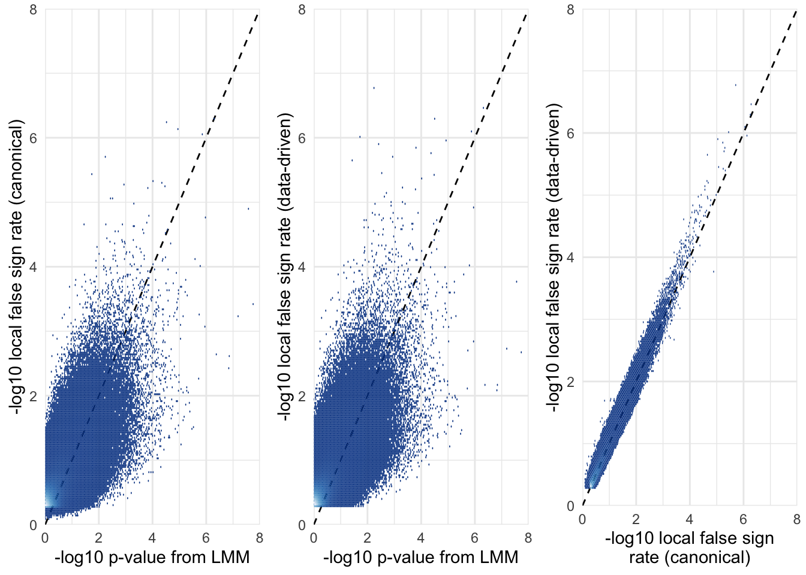

GWAS for fitness in Drosophila
Last updated: 2018-10-04
workflowr checks: (Click a bullet for more information)-
✖ R Markdown file: uncommitted changes
The R Markdown is untracked by Git. To know which version of the R Markdown file created these results, you’ll want to first commit it to the Git repo. If you’re still working on the analysis, you can ignore this warning. When you’re finished, you can runwflow_publishto commit the R Markdown file and build the HTML. -
✔ Environment: empty
Great job! The global environment was empty. Objects defined in the global environment can affect the analysis in your R Markdown file in unknown ways. For reproduciblity it’s best to always run the code in an empty environment.
-
✔ Seed:
set.seed(20180914)The command
set.seed(20180914)was run prior to running the code in the R Markdown file. Setting a seed ensures that any results that rely on randomness, e.g. subsampling or permutations, are reproducible. -
✔ Session information: recorded
Great job! Recording the operating system, R version, and package versions is critical for reproducibility.
-
Great! You are using Git for version control. Tracking code development and connecting the code version to the results is critical for reproducibility. The version displayed above was the version of the Git repository at the time these results were generated.✔ Repository version: 450cb72
Note that you need to be careful to ensure that all relevant files for the analysis have been committed to Git prior to generating the results (you can usewflow_publishorwflow_git_commit). workflowr only checks the R Markdown file, but you know if there are other scripts or data files that it depends on. Below is the status of the Git repository when the results were generated:
Note that any generated files, e.g. HTML, png, CSS, etc., are not included in this status report because it is ok for generated content to have uncommitted changes.Ignored files: Ignored: .DS_Store Ignored: .Rhistory Ignored: .Rproj.user/ Ignored: analysis/.DS_Store Ignored: code/.DS_Store Ignored: data/.DS_Store Ignored: data/derived/.DS_Store Ignored: data/derived/output/.DS_Store Ignored: data/input/.DS_Store Ignored: figures/.DS_Store Untracked files: Untracked: .pversion Untracked: ExDeconDemo_c.log Untracked: ExDeconDemo_loglike.log Untracked: TEST_Venn.tiff Untracked: analysis/checking_mashr_results.Rmd Untracked: code/Drosophila_GWAS.Rmd Untracked: data/derived/.!25440!dgrp2_focal_lines.bed Untracked: data/derived/.pversion Untracked: data/derived/GRM.txt Untracked: data/derived/TWAS_result_females.csv Untracked: data/derived/TWAS_result_males.csv Untracked: data/derived/all_four_traits_SNP_clumps.txt Untracked: data/derived/all_univariate_GEMMA_results.csv Untracked: data/derived/annotations.sqlite3 Untracked: data/derived/dgrp2_QC_all_lines.bed Untracked: data/derived/dgrp2_QC_all_lines.bim Untracked: data/derived/dgrp2_QC_all_lines.fam Untracked: data/derived/dgrp2_QC_all_lines.log Untracked: data/derived/dgrp2_QC_focal_lines.bed Untracked: data/derived/dgrp2_QC_focal_lines.bim Untracked: data/derived/dgrp2_QC_focal_lines.bk Untracked: data/derived/dgrp2_QC_focal_lines.fam Untracked: data/derived/dgrp2_QC_focal_lines.log Untracked: data/derived/dgrp2_QC_focal_lines.rds Untracked: data/derived/dgrp2_transcriptome_subset.bed Untracked: data/derived/dgrp2_transcriptome_subset.bim Untracked: data/derived/dgrp2_transcriptome_subset.fam Untracked: data/derived/dgrp2_transcriptome_subset.log Untracked: data/derived/female_early_SNP_clumps.txt Untracked: data/derived/female_late_SNP_clumps.txt Untracked: data/derived/lines_to_keep.txt Untracked: data/derived/lmm_ED_mashr_results.rds Untracked: data/derived/lmm_canonical_mashr_results.rds Untracked: data/derived/male_early_SNP_clumps.txt Untracked: data/derived/male_late_SNP_clumps.txt Untracked: data/derived/mashr_results_ED.rds Untracked: data/derived/mashr_results_canonical.rds Untracked: data/derived/output/.pversion Untracked: data/derived/output/GRM.cXX.txt Untracked: data/derived/output/GRM.log.txt Untracked: data/derived/output/GRM_transcriptome.cXX.txt Untracked: data/derived/output/GRM_transcriptome.log.txt Untracked: data/derived/output/all_four_traits.assoc.txt Untracked: data/derived/output/all_four_traits.log.txt Untracked: data/derived/output/allele_freq_count.assoc.txt Untracked: data/derived/output/allele_freq_count.log.txt Untracked: data/derived/output/eigen_decomp.eigenD.txt Untracked: data/derived/output/eigen_decomp.eigenU.txt Untracked: data/derived/output/eigen_decomp.log.txt Untracked: data/derived/output/eigen_decomp_transcriptome.eigenD.txt Untracked: data/derived/output/eigen_decomp_transcriptome.eigenU.txt Untracked: data/derived/output/eigen_decomp_transcriptome.log.txt Untracked: data/derived/plink.frq Untracked: data/input/.pversion Untracked: data/input/dgrp2.fam copy Untracked: data/input/dgrp2.fam.bak Untracked: data/input/huang_2015_tableS11_eQTL_females.csv Untracked: data/input/huang_2015_tableS12_eQTL_males.csv Untracked: data/input/huang_2015_tableS2_gene_expression.csv Untracked: data/input/huang_2015_tableS5_transcript_heritability.csv Untracked: dgrp2_clean.log Untracked: gwas_adaptive_shrinkage.R Unstaged changes: Modified: analysis/GWAS_tables.Rmd Modified: analysis/TWAS.Rmd Modified: analysis/gwas_adaptive_shrinkage.Rmd Modified: analysis/index.Rmd Modified: analysis/perform_gwas.Rmd Modified: analysis/plotting_results.Rmd Deleted: data/derived/DGRP_SNP_genos.sqlite3 Deleted: data/derived/gwas_db.sqlite3 Deleted: data/derived/lm_results_ashr.csv Modified: data/derived/lmm_results_ashr.csv Deleted: data/derived/output/DGRP_GRM.cXX.txt Deleted: data/derived/output/DGRP_GRM.log.txt Deleted: data/derived/output/female_early_bslmm.bv.txt Deleted: data/derived/output/female_early_bslmm.gamma.txt Deleted: data/derived/output/female_early_bslmm.hyp.txt Deleted: data/derived/output/female_early_bslmm.log.txt Deleted: data/derived/output/female_early_bslmm.param.txt Deleted: data/derived/output/female_early_bslmm_preds.log.txt Deleted: data/derived/output/female_early_bslmm_preds.prdt.txt Deleted: data/derived/output/female_early_female_late.assoc.txt Deleted: data/derived/output/female_early_female_late.log.txt Deleted: data/derived/output/female_early_lm.assoc.txt Deleted: data/derived/output/female_early_lm.log.txt Modified: data/derived/output/female_early_lmm.assoc.txt Modified: data/derived/output/female_early_lmm.log.txt Deleted: data/derived/output/female_early_male_early.assoc.txt Deleted: data/derived/output/female_early_male_early.log.txt Deleted: data/derived/output/female_late_lm.assoc.txt Deleted: data/derived/output/female_late_lm.log.txt Modified: data/derived/output/female_late_lmm.assoc.txt Modified: data/derived/output/female_late_lmm.log.txt Deleted: data/derived/output/female_late_male_late.assoc.txt Deleted: data/derived/output/female_late_male_late.log.txt Deleted: data/derived/output/male_early_lm.assoc.txt Deleted: data/derived/output/male_early_lm.log.txt Modified: data/derived/output/male_early_lmm.assoc.txt Modified: data/derived/output/male_early_lmm.log.txt Deleted: data/derived/output/male_early_male_late.assoc.txt Deleted: data/derived/output/male_early_male_late.log.txt Deleted: data/derived/output/male_late_lm.assoc.txt Deleted: data/derived/output/male_late_lm.log.txt Modified: data/derived/output/male_late_lmm.assoc.txt Modified: data/derived/output/male_late_lmm.log.txt Deleted: data/derived/output/result.log.txt Deleted: data/derived/output/result.prdt.txt Deleted: data/derived/summed_interSNP_correlations.csv Deleted: data/derived/trimmed_DGRP.bed Deleted: data/derived/trimmed_DGRP.bim Deleted: data/derived/trimmed_DGRP.fam Deleted: data/derived/trimmed_DGRP.rds Modified: data/input/dgrp2.fam
library(dplyr)
library(readr)
library(ggplot2)
library(gridExtra)
library(tidyr)
db <- DBI::dbConnect(RSQLite::SQLite(), "data/derived/annotations.sqlite3")
# Results for all 1,613,615 SNPs, even those that are in 100% LD with others (these are grouped up by the SNP_clump column)
all_snps <- tbl(db, "univariate_lmm_results")
# All SNPs and SNP groups that are in <100% LD with one another (n = 1,201,969)
SNP_clumps <- all_snps %>% select(-SNP) %>% distinct() %>% collect(n=Inf)Inspecting the effect of adaptive shrinkage on the SNP effect size estimates
The plots reveal that the R package mashr, which implemented multivariate adaptive shrinkage, was effective at shrinking the effect size estimates towards zero. The amount of shrinkage applied was stronger when applying mashr using data-driven covariance matrices, as opposed to ‘canonical’ covariance matrices that were selected a priori by us.
hex_plot <- function(x, y, xlab, ylab){
ggplot(SNP_clumps, aes_string(x, y)) +
geom_abline(linetype = 2) +
geom_vline(xintercept = 0, linetype = 3) +
geom_hline(yintercept = 0, linetype = 3) +
stat_binhex(bins = 200, colour = "#FFFFFF00") +
scale_fill_distiller(palette = "Purples") +
coord_cartesian(xlim = c(-1,1), ylim = c(-1,1)) +
theme_minimal() + xlab(xlab) + ylab(ylab) +
theme(legend.position = "none")
}
grid.arrange(
hex_plot("beta_female_early_raw", "beta_female_early_mashr_canonical", "Raw estimate of SNP effect size from GEMMA", "Corrected estimate from mashr (canonical)"),
hex_plot("beta_female_early_raw", "beta_female_early_mashr_ED", "Raw estimate of SNP effect size from GEMMA", "Corrected estimate from mashr (data-driven)"),
hex_plot("beta_female_early_mashr_canonical", "beta_female_early_mashr_ED", "Corrected estimate from mashr (canonical)", "Corrected estimate from mashr (data-driven)"),
ncol = 3)
Relationship between raw \(p\)-values and the local false sign rate
The local false sign rate (defined as the probability that a SNP’s true effect is non-zero and has the same sign as the effect size estimate) was correlated with the raw p-value (as expected). Note that the false sign rate is sometime ‘more significant’ than the p-value; one likely reason for this is that the local false sign rate uses the information provided by the correlations among SNP effects on our four fitness traits, while the \(p\)-value ignores this information. Another reason is that the local false sign rate was (noisily) estimated using a Markov chain, in a Bayesian model that incorporates priors, while the p-value is estimated by maximum likelihood and has comes from a frequentist model lacking priors.
As for the effect sizes, the local false sign rates provided by the data-driven approach are almost always less significant than those provided by the canonical approach.
hex_plot2 <- function(p, xlab, ylab){
p +
geom_abline(linetype = 2) +
stat_binhex(bins = 200, colour = "#FFFFFF00") +
scale_fill_distiller(palette = "Blues") +
scale_x_continuous(expand = c(0,0)) + scale_y_continuous(expand = c(0,0)) +
coord_cartesian(xlim = c(0, 8), ylim = c(0, 8)) +
theme_minimal() + xlab(xlab) + ylab(ylab) +
theme(legend.position = "none")
}
grid.arrange(
SNP_clumps %>% ggplot(aes(-log10(pvalue_female_early_raw), -log10(LFSR_female_early_mashr_canonical))) %>% hex_plot2("-log10 raw p-value from GEMMA", "-log10 local false sign rate (canonical)"),
SNP_clumps %>% ggplot(aes(-log10(pvalue_female_early_raw), -log10(LFSR_female_early_mashr_ED))) %>% hex_plot2("-log10 raw p-value from GEMMA", "-log10 local false sign rate (data-driven)"),
SNP_clumps %>% ggplot(aes(-log10(LFSR_female_early_mashr_canonical), -log10(LFSR_female_early_mashr_ED))) %>% hex_plot2("-log10 local false sign rate (canonical)", "-log10 local false sign rate (data-driven)"),
ncol = 3)
Conclusion
Based on these plots, we elected to focus on the results generated by the data-driven mashr analysis, as opposed to the canonical mashr analysis. This is more conservative, because the effect sizes and local false sign rates are more moderate in the data-driven analysis. Also, using the data-driven approach yields estimates that are independent of our prior expectations about the possible covariance structures that might exist in the data, and is therefore robust to the possibility that our expectations are wrong.
Session information
sessionInfo()R version 3.5.1 (2018-07-02)
Platform: x86_64-apple-darwin15.6.0 (64-bit)
Running under: macOS High Sierra 10.13.6
Matrix products: default
BLAS: /Library/Frameworks/R.framework/Versions/3.5/Resources/lib/libRblas.0.dylib
LAPACK: /Library/Frameworks/R.framework/Versions/3.5/Resources/lib/libRlapack.dylib
locale:
[1] en_AU.UTF-8/en_AU.UTF-8/en_AU.UTF-8/C/en_AU.UTF-8/en_AU.UTF-8
attached base packages:
[1] stats graphics grDevices utils datasets methods base
other attached packages:
[1] hexbin_1.27.2 tidyr_0.8.1 gridExtra_2.3 ggplot2_3.0.0 readr_1.1.1
[6] dplyr_0.7.6
loaded via a namespace (and not attached):
[1] Rcpp_0.12.18 RColorBrewer_1.1-2 dbplyr_1.2.2
[4] compiler_3.5.1 pillar_1.3.0 git2r_0.23.0
[7] plyr_1.8.4 workflowr_1.1.1 bindr_0.1.1
[10] R.methodsS3_1.7.1 R.utils_2.7.0 tools_3.5.1
[13] bit_1.1-14 digest_0.6.15 lattice_0.20-35
[16] memoise_1.1.0 RSQLite_2.1.1 evaluate_0.11
[19] tibble_1.4.2 gtable_0.2.0 pkgconfig_2.0.1
[22] rlang_0.2.2 DBI_1.0.0 yaml_2.2.0
[25] bindrcpp_0.2.2 withr_2.1.2 stringr_1.3.1
[28] knitr_1.20 hms_0.4.2 bit64_0.9-7
[31] rprojroot_1.3-2 grid_3.5.1 tidyselect_0.2.4
[34] glue_1.3.0 R6_2.2.2 rmarkdown_1.10
[37] blob_1.1.1 purrr_0.2.5 magrittr_1.5
[40] whisker_0.3-2 backports_1.1.2 scales_1.0.0
[43] htmltools_0.3.6 assertthat_0.2.0 colorspace_1.3-2
[46] labeling_0.3 stringi_1.2.4 lazyeval_0.2.1
[49] munsell_0.5.0 crayon_1.3.4 R.oo_1.22.0 This reproducible R Markdown analysis was created with workflowr 1.1.1